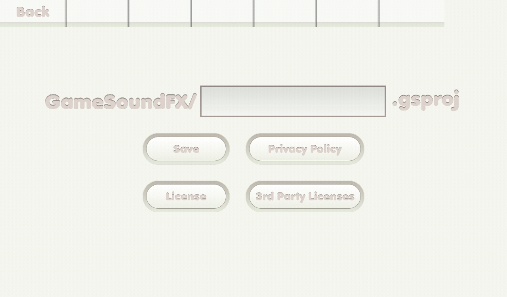

{% include JB/setup %}
Save project screen

- Back tab: back to previous main screen.
- Text field: type a project file name.
- Save button: save a project.
- Privacy Policy button: link to the privacy policy web page.
- License button: leads you to license screen.
- 3rd party license button: leads you to 3rd party license screen.